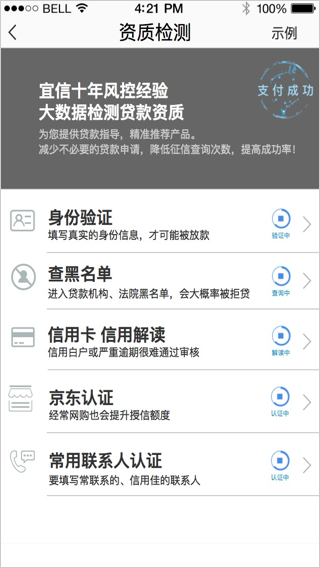
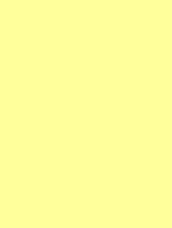

情况一：返回code码：30000


取消
拨打电话
查询异常，资质检测失败
建议拨打客服电话咨询
提示

任何阶段都可能返回code码30000，
当遇到该异常状况时，直接返回资质检测功能首页，并弹框提示，
点击“拨打电话”按钮，隐去弹框，直接调取系统拨号功能，拨打贷嘛客服电话“010-52835918”
点击“取消按钮”，隐去弹框
状态变更：
后台根据客服反馈是否退款，
1. 若退款，将该用户的状态置为为支付状态，进入时重新发起最新流程
2. 若无任何退款反馈，返回30000后，状态置为“未检测”，用户可以重新发起该项或其他项检测。
特殊异常状态
情况二：检测超时（具体时间限制问产品）
当某一检测项处于“检测中”状态时，如果该检测时间超过了 t 时间，则将该检测项置为同“30000”一样的状态